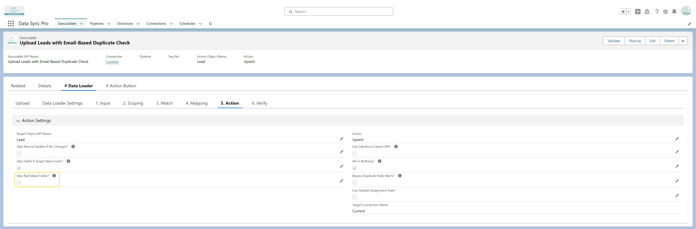

To skip all NULL fields, simply enable "Skip Null Value Fields" in the Action section.

To skip only specific fields, use the
SKIP_BLANK_VALUE(value) function in the target field mapping,
which prevents assignment if the evaluated value is NULL or an empty string.